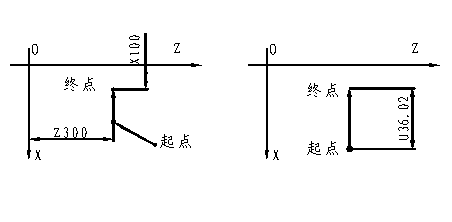
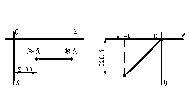
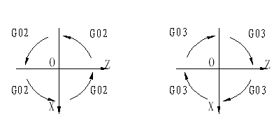
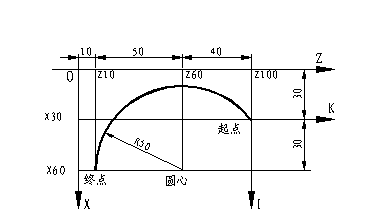
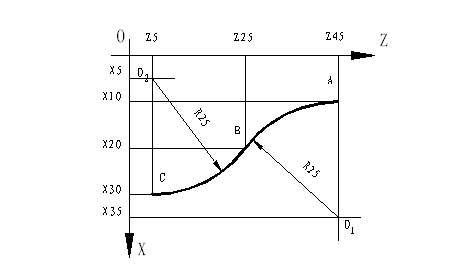
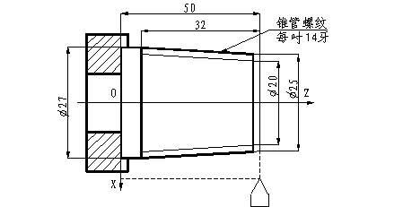
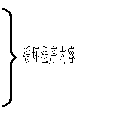
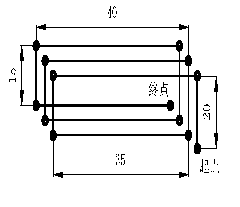
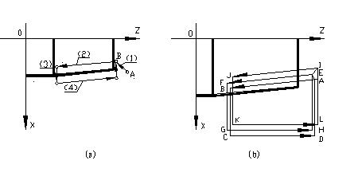

编程指令
准备功能（G 功能）
快速点定位指令G00
本指令可将刀具快速移动到所需位置上，一般作为空行程运动，既可是单坐标
运动，又可X,Z两坐标同时运动，程序格式如下：
例1： N0020 G00 X100 Z300
N0030 G00 Y100
表示将刀具快速移动到X为100、Y为100、Z为300的位置上。
例2： N0030 G00 Y5
N0040 G00 U-36.02
表示刀具从当前位置快速移动到Y为5,再向X轴负方向快速移动36.02。
注：（1）G00指令中不需要给定速度，G00运行速度应在参数设置方式下设定，设定的范围：2000mm/min～8000mm/min。G00的具体数值根据机床大小及负载情况调整。
（2）只有一个坐标值时，刀具将沿该方向运动（见图4.2－2）；有两个坐标值时，刀具将先以1:1步数两坐标联动，然后单坐标运动（见图4.2－1）。
(3)Y轴只能单独运动，不能与其它轴同时运动。

图4.2－1 图4.2－2
直线插补指令 G01
本指令可将刀具按给定速度沿直线移动到所需位置，一般作为切削加工运动指令，既可单坐标运动，又可X,Z两坐标同时插补运动。程序格式如下：
例1 N0050 G01 Y-2 F200
N0060 G01 Z100 F200
表示将刀具以每分钟200毫米的速度走到Y-2，再到Z100的位置，运动轨迹见图4.2－3。
例2 N0070 G01 Y-3 F150
N0080 G01 U20.5 W-40 F150
表示刀具以每分钟150毫米的速度走到Y-3，从当前位置开始按插补方式走一斜线，终点相对于起点的坐标为(U20.5,W-40),即其沿X轴方向移动20.5,沿Z轴移动W-40,运动轨迹见图4.2－4。

图4.2－3 图4.2－4
注：（1）G01指令中应给出速度F值，速度范围为6～2000mm/min。
（2）只有一个坐标值时刀具将沿该方向运动，有两个坐标值时，刀具将按所给的终点坐标值做直线插补运动，其轨迹为连结起点到终点的一条斜线,见图4.2－4。
圆弧插补指令G02、G03
本指令可将刀具按所需圆弧运动，G02为顺圆弧，G03为逆圆弧，顺、逆方向设定见图4.2－5。特别注意：这里的方向设定与人们日常顺、逆时针方向相反。本指令
可自动过象限。

图4.2－5
编制圆弧程序时，应确定圆弧终点位置与圆心位置。如需编制图4.8所示圆弧轨迹的程序 ，应明确圆弧终点位置为（X120、Z10）或（U60、W-90），圆心位置是相对于圆弧起点来描述的，用（I、K）表示圆心位置，这样图4.8中圆心位置应是（I60、K-40）。确定了这两点，即可编程。
一般情况下 I=X圆心－X起点
K=Z圆心－Z起点
注：（1）圆弧终点坐标计算误差应小于5个脉冲当量值。
（2）运行速度为6～600mm/min。
例1 以绝对尺寸方式编制图4.2－6所示圆弧程序。程序如下：

图4.2－6
N0100 G02 X60 Z10 I30 K-40 F300
顺圆弧 圆弧终点坐标值 圆心相对圆弧起点位置 运动速度
例2 以增量尺寸方式编制图4.2－6所示圆弧程序。程序如下:
N0100 G02 U30 W-90 I30 K-40 F300
- 按图4.2－7所示圆弧轨迹要求，以绝对尺寸方式编制程序。

图4.2－7
这是一个光滑曲线，它由A→B→C两段圆弧连接而成，AB为顺圆弧，BC为逆圆弧。所以整个圆弧曲线应由两段圆弧程序连接起来完成，AB的圆心位置为（I25、K0），BC的圆心位置为（I-15、K-20）。程序如下：
N0120 G02 X20 Z25 I25 K0 F250
N0130 G03 X30 Z5 I-15 K-20
例4 按图4.9所示圆弧轨迹要求，以增量尺寸方式编制程序。程序如下：
N0120 G02 U10 W-20 I25 K0 F250
N0130 G03 U10 W-20 I-15 K-20
※本系统允许对G02，G03指令使用圆弧半经编程。
其编程格式为：
G02 X（U）------Z（W）------R------F------
G03 X（U）------Z（W）------R------F-------
其中X（U），Z（W）为圆弧终点。坐标X，Z为绝对坐标尺寸，U，W为增量尺寸，X和U以直径量编程。
R为圆弧半径。
F为运行速度。
原G02，G03以圆心坐标编程保持不变。这样，G02，G03既能以圆弧半径编程，又可以圆心坐标编程，用户可灵活应用。
注 :（1） 如G02，G03中既有I，K又有R则出错E-15-02
（2） 如R＜ U2+W2 ，则出错E15-03
（3） 另外，用圆弧半径编程时，圆弧对应的圆心角不能超过180度 ，圆弧半径R，及圆弧程序中X坐标或Z坐标的位移量不能超过650mm。
例：以圆弧半径编程方式编制图4.9所示圆弧程序。程序如下；
N0140 G02 U10 W-20 R25 F250
N0150 G03 U10 W-20 R25
程序延时指令G04
本指令给定所需延时的时间，当程序执行到本程序段时，系统按所给定的时间延时，不做任何其它动作，延时结束后再执行下一段程序。
例：N0140 G04 F10.50
表示本段程序延时10.50秒。
注：本指令中F表示时间，单位为秒，范围为0.01―99.99秒。
螺纹插补指令G30,G32、G33
本指令用于加工标准公、英制直螺纹、锥螺纹、多头螺纹。G30用来设定螺纹退尾方式,G32为英制螺纹，G33为公制螺纹。在本指令中，必须采用增量尺寸方式编程，如G32,G33指令中含有绝对尺寸X、Z,则处错E18-03。程序中的U为直径量。
1.螺纹退尾方式设定：
本系统螺纹退尾方式有三种：
（1）标准退尾（无G30指令或G30后不带参数）：X向退尾量为2倍的导程再加2mm, 如导程为1.5mm的螺纹,退尾量为2×1.5＋2=5mm（实际位移2.5mm）,Z向退尾量为1.2mm。
指令格式 N×××× G30
如果不用G30指令则系统默认为标准退尾。
（2）无退尾：螺纹指令结束时没有退尾,用于攻丝。
指令格式 N×××× G30 U0 W0
（3）螺旋线退尾（老鼠尾）：按G30指令设定的U值与W值退尾。
指令格式 N×××× G30 U＿＿ W＿＿
其中0＜U＜30mm,W＞1/4螺距。
例 N0080 G30 U10 W2
N0090 G00 U-16
N0100 G33 W-40 F1.5
在螺纹总长度40mm中Z方向走到38mm时,即最后剩下2mm时X方向开始退尾,X方向退尾量为10mm,X方向退尾的同时,Z方向走完剩下的尺寸。
（4）在程序中G30必须设在螺纹加工指令前,并且G30指令具备模态,即G30设定后,其后面的螺纹指令均以设定的方式退尾,直至新的G30出现。
2.螺纹指令格式如下：
G32 U＿＿ W＿＿ F＿＿
G33 U＿＿ W＿＿ F＿＿
F表示螺纹导程，公制螺纹单位为毫米,F范围为：0.25～12.00mm,英制螺纹用每�佳朗�表示，小数点后的数值表示分数牙数的分母值，如每��11 牙表示为11.2。F范围为33～3 牙/�肌１喑叹倮�如下：
牙表示为11.2。F范围为33～3 牙/�肌１喑叹倮�如下：
例1 N0160 G33 W-50 F1.5
表示刀具沿Z轴负方向运行50毫米，加工导程为1.5毫米的右旋公制螺纹（主轴正转）。
例2 N0180 G32 W50 F11.2
表示沿Z轴正方向运行50毫米，加工每��11 牙的英制左旋螺纹（主轴正转）。
牙的英制左旋螺纹（主轴正转）。
- 参数U为螺纹终点与起点间的直径差,无U时为直螺纹,有U时为锥螺纹。
- 参数W为螺纹总长,其正负与Z轴一致,要求│W│＞│U│,│W│＞4mm,
否则程序出错E18－04。由于螺纹加工起步时的螺距是变化的,因此编程时必须使刀尖让开工件足够的距离。
- 在执行G32,G33前必须安排一道X向进刀指令（G00或G01）,用来确定 螺纹切削完毕时X向的退尾方向,本系统规定退尾方向与进刀方向相反,如果没有进刀指令,则程序出错E18－05。
例 N0150 G01 U-10 F150
N0160 G33 W-50 F2
其中,第N0150段程序（负方向走刀）指出了第N0160段程序的退尾方向是正方向。
3.螺纹加工需与主轴转速相适应,主轴转速过高或不稳会因系统响应跟不上而使螺纹破牙,如果主轴刚起动或刚变速而转速不稳,则必须延时足够的时间等主轴平稳后再开始螺纹加工。本系统推荐主轴转速n应满足下式：
n≤2300/t-60,对于较大的机床或较大的导程,其转速还应适当降低。其中,n―主轴转速（转/分）,t―螺纹导程（mm）,英制螺纹应将其换算成公制导程。
4.本系统具有检查编码器脉冲数及主轴转速功能,即在手动方式下起动主轴,按F5键就可看到编码器脉冲数及主轴转速。
例3 按图4.10要求编制加工锥体螺纹程序。加工锥螺纹，除了将长度用W值表示外，还需将锥螺纹终点处距起点的直径差值以U值表示，其它与直螺纹程序编制相同。

图4.2－8
若以两刀车完螺纹，程序如下：
N0190 G30 U6 W2
N0200 G00 X21
N0210 G32 U2 W-32 F14
N0220 G00 Z50
N0230 X20
N0240 G32 U2 W-32 F14
N0250 G00 X40 Z50
返回起始点指令G26、G27、G28、G29
本指令是将刀具返回起始点（上次程序启动时刀架的起始点）。其中G26指令用于X（U）、Z（W）两坐标均返回至起始点，G27指令用于X（U）轴返回起始点，G28指令用于Y 轴返回起始点，G29用于Z（W）返回起始点。程序格式如下；
例1 N0260 G26
表示X（U）、Z（W）方向均返回到起始点。
例2 N0280 G27
表示X（U）方向返回到起始点。
例3 N0300 G29
表示Z（W）方向返回起始点。
注：（1）采用G26返回起始点时，运动方式与G00方式相同。
（2）返回速度与G00速度一致。
程序循环指令G22、G80
本指令用于零件加工中局部需反复加工动作的场合，如需多刀加工某较大的切削量，或多刀加工螺纹等，程序格式如下；

例1 N0320 G22 L××××
N0330 ----------------
：
：
：
N0390 ----------------
N0400 G80
注：（1）程序循环指令从 G22 指令以下一段程序开始执行，到 G80 以上一段程序为止结束一次循环，然后再返回到 G22 以下一段程序执行。
（2）循环次数以 L 表示 ，L 后四位数（0～9999）表示循环次数。如果 L0000 则程序跳过循环内容，向下执行。L0007 表示执行 7 次循环内容，以此类推。
（3）本指令不可嵌套。
- 按图4.11所示轨迹要求编制程序。程序如下：
N0420 G22 L0003
N0430 G00 U－20
N0440 G01 W－40 F200
N0450 G00 U15
N0460 W35
N0470 G80

图4.2－9
矩形循环指令G23
本指令用于加工相互垂直的两个相邻表面，运动轨迹为一矩形。在每次进刀量不同时，如在后续段依次给出新的对角点参数，矩形的循环将依次执行。
注：（1）本指令可采用绝对尺寸（X、Z）或增量尺寸（U、W）编程。
（2）执行本指令时，矩形的第a、e、d、h四条边运行速度为G00设定的速度，第b、c、f、g 四条边按指令所给定F速度运行。
（3）无论对角点位置处于起点何方，本系统均先运行X（U）方向。
（4）X（U）、Z（W）所设定的矩形不能有某边长为零的情况出现。
返回硬参考点指令G37、G38、G39、G36
本指令是将刀尖返回硬参考点。（只能在装有硬参考点的机床上使用）
其中 G37──X 向回硬参考点；
G38──Y 向回硬参考点；
G39──Z 向回硬参考点；
G36──先 X 向回硬参考点，再 Z 向回硬参考点；
当程序执行到G36、G37、G38、G39时，工作台便以高速靠向机械原点行程开关，当工作台压下行程开关后，便以F300mm/min的速度低速运行，直至行程开关释放，再以同样的低速反向靠向行程开关直至行程开关再压下时，工作台停止运行。
在指令中必须给出对参考点的运动方向，如参考点位于当前刀尖的负方向，则坐标值为负值（取消刀补状态下），参考点位于当前刀尖的正方向时，则坐标值为正值（取消刀补状态下），坐标值的大小可以随意设定，但不能为零。
G82、G83 螺纹循环指令
本指令用于循环加工公制、英制螺纹，多头螺纹，G82为英制螺纹循环，G83 为公制螺纹循环，本指令中的坐标采用增量方式编程。
格式：G82（G83） U＿＿ W＿＿ I＿＿ K＿＿ F＿＿
U、W 为切削螺纹时的加工长度，可为直螺纹或锥螺纹，I、K 为切削螺纹前的进刀量，如果进刀量为零，可以不输入I、K ，参数F为螺纹导程。
G82、G83指令具备模态，其中U、W、F也相应具备模态，即在其后继螺纹循环中不需输入G82（G83）、U、W、F等指令字，只需输入I、K即可。参见图4.2－10(a),每个循环的运动轨迹为从起点A开始(1)按I、K量进刀至B点。（2）按U、W值进行螺纹切削。（3）退尾。（4）Z向退刀。（5）X向走刀返回B点（也为下一循环的起点）。

图4.2－10
编程示例：加工如图4.2－10(b)所示螺纹，分三刀车完。
N0050 G30 U10 W3 ；设定螺纹退尾方式。
N0060 G00 X20 ；螺纹切削前安排一道X向走步命令。
N0070 G82 U4 W-20 F11.2 ；第一刀螺纹循环。
N0080 I0.5 K-0.1 ；进刀,车第二刀螺纹循环。
N0090 I0.5 K0.2 ；进刀,车第三刀螺纹循环。


 运行轨迹见图4.2－10(b),N0070段轨迹为A点开始A 螺纹切削 B C D A，N0080段轨迹为A 进刀 E 螺纹切削 F G H E。
运行轨迹见图4.2－10(b),N0070段轨迹为A点开始A 螺纹切削 B C D A，N0080段轨迹为A 进刀 E 螺纹切削 F G H E。
N0080段轨迹为E 进刀 I 螺纹切削 J K L I。
说明：
（1）G82、G83加工参数和G32、G33相同；
（2）I为X方向偏移量（增量尺寸）I≥0
（3）K为Z方向偏移量，可为正负数，K为增量尺寸，当指令中无K参数时，默认K=0
（4）指令开始执行时，先走完I，K，再走螺纹加工，然后返回到螺纹的起始点。
（5）含U参数为锥螺纹，不含U为直螺纹。
（6）G82，G83指令循环体内具有模态，即除I、K参数外，其余参数具有模态。
（7）在G82、G83指令前，必须安排一道X向走步指令（G00或G01），以确定螺纹加工的退尾方向，即退尾方向和进刀相反，否则出错。
（8）在G82,G83前也必须用G30指令设定退尾方式。
返回软参考点指令G46，G47，G48，G49
G46 两坐标同时回软参考点，运动方式同G00。
G47 X向回软参考点。
G48 Y向回软参考点。
G49 Z向回软参考点。
恒线速切削功能(可选功能)
在实际加工过程中，为了保证刀具切削工件的线速度恒定，随着刀具位置的变化，系统根据刀具位置计算并控制主轴转速作相应变化。这就是恒线速切削功能。本功能须配变频器。
1.设定恒线速切削:
指令格式：G96 S×××× 其中S后指定线速度(米/分)，该指令后的切削线速度均按设定的速度执行，当主轴转速达到系统设定的极限值时，主轴转速不再变化，而是以该速度继续运行。
- 对于快速移动指令,因为其不进行切削,系统只在其到达终点时将主轴转速进行调整。
- 对于螺纹指令，不进行恒线速切削控制。
2.取消恒线速切削:
指令格式: G97 或 G97 S×××× 其中S后设定主轴转速(转/分),该指令后的主轴转速将按设定的数值执行,不再根据刀具位置变化。如果G97指令不设定S值,则主轴转速保持G97指令执行前的状态。